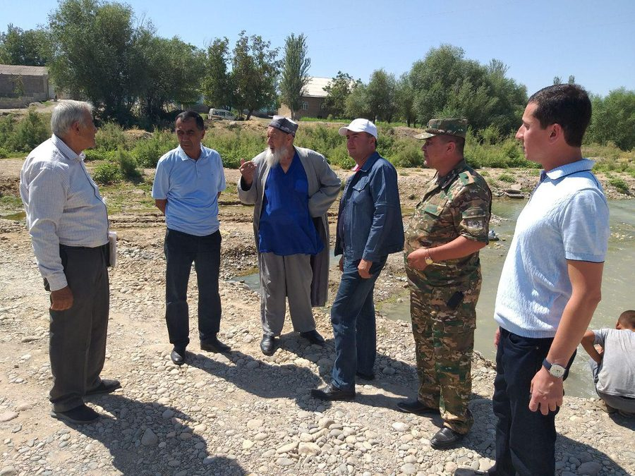

Zarafshon vohasining dehqonchiligi

Zarafshon vohasining tabiiy sharoiti qishloq xo`jaligini
rivojlantirish uchun qulaydir. Zarafshon, ko`plab tog` soylari
(daryolar), shuningdek, yerosti suvlari katta-katta dala
maydonlarini sug`orishga imkon beradi. Zarafshon daryosining quyi
oqimidagi eng boy gaz konlari bilan birgalikda voha va unga tutash
hududlarning butun iqtisodiyoti uchun muhim bo`lgan energiya
manbalariga boy. Voha atrofidagi cho`l va tog`li hududlarning keng
yaylovlari qorako`lchilik va va chorvachilikning turli sohalari
rivojiga yordam beradi.
Bu yerda respublikaning barcha yaylovlarining 65 foizi, jamlangan,
O`zbekistonda boshqa hech bir joyda qo`y otarlarini boqish uchun
bunday sharoitlar mavjud emas. Shu sababli, tuman o`zining yuqori
darajadagi iqtisodiy ko`rsatkichlari bilan ajralib turadi. Bu
respublikadagi eng yirik qorako`lchilik ishlab chiqaruvchisi bo`lib,
qorako`l qo`ylarining 2/3 qismi mahalliy yaylovlarda boqiladi.
O`zining biologik xususiyatlariga ko`ra qorako`l q`oylari xonaki
qo`y zoti bo`lib, cho`l yaylovlari sharoitida to`rt turdagi
qimmatbaho mahsulotni – qorako`lteri, jun, go`sht va sut yetishtirib
chiqaradi. Qorako`l qo`ychiligining yetakchi mahsuloti bo`lgan –
qorako`lteri ichki va tashqi bozorda yuqori talabga ega bo`lib,
muhim eksport mahsuloti hisoblanadi.
Hech bir qo`y zoti qorak`ol qo`ylari kabi turli va ayni paytda
tanqis cho`l o`simliklaridan to`liq foydalana olmaydi. O`zining
chidamliligi bilan ushbu qo`y zoti cho`l yaylovlarining kamyob va
tanqis o`tlaridan samarali foydalanib, juda katta masofani bosib
o`tadi. Mintaqaning tuprog`i, o`simlik va hayvonot dunyosi juda
xilma-xildir. Respublika hududida 3000 dan ortiq o`simlik turlari
mavjud bo`lib, ularning 9 foizi endemik hisoblanib, faqat shu yerda
o`sadi. O`zbekiston flora va faunasi Kavkaz, Old Osiyo, xususan Eron
bilan ma’lum bir umumiylikka ega. Respublikada sut emizuvchilarning
90 dan ortiq turi, sudralib yuruvchilarning 60 ga yaqin turi,
qushlarning 400 turi, baliqlarning 40 dan ortiq turlari mavjud.
Tuproq, o`simlik va hayvonlarning O`zbekiston hududida tarqalishida
ma`lum bir qonuniyatga asoslanadi.
Bahor kelishi bilan efemer o`simliklar jadal o`sa boshlaydi (bir
yillik o`simliklar, ularning barchasi qisqa bahorda o`sadi,
gullaydi, urug` beradi va keyin quriydi). Jazirama yozning
boshlanishi bilan o`tlar va gullar sarg`ayadi va quriydi.
Cho`l o`simliklari issiq va quruq iqlimga moslashgan. Ularning
ildizlari juda uzun, barglari bor yoki umuman yo`q yoki ular juda
kichikdir. Shuning uchun, cho`l o`simliklari ozgina namlikni
bug`laydi. Ularning ba’zilari vegetativ siklni qisqa vaqt ichida
yakunlashga ulguradilar. Qumli cho`lda shuvoq, yulg`un, qum
akatsiyalari va qiyoqo`t, qizilmiya, saksovul o`sadi. Saksovul qumni
yaxshi ushlab turadi. Uning tanasi zich, suvga cho`kuvchan. Sho`xok
yerlarda shuvoq, sho`ra, isiriq kabi o`simliklar o`sadi.
Zarafshon vohasining cho`l tekisliklari qorako`l qo`ylari va
tuyalari uchun yaylov sifatida foydalaniladi. Cho`lda ko`plab
foydali o`simliklar mavjud. Ular tibbiyotda, kimyo sanoatida keng
ishlatiladi. Samarqand viloyati uzumchilikning eng qadimgi
mintaqalaridan biridir. Samarqand uzumlari bundan uch ming yil avval
paydo bo`lgan. Samarqand viloyati uzum ekish maydoni va uzum hosili
bo`yicha 1984-yilda respublikada birinchi o`rinni egalladi. Bu yerda
100 dan ortiq uzum navlari yetishtirildi. Eng mashhurlari: oq
kishmish, qora kishmish. Ko`p asrlik xalq seleksiyasi natijasida
uzumning yangi navlari yaratildi, masalan, nimrang, pushti toyfi,
kattaqo`rg`oni, husayniy, sultoni. Uzumboshining hajmi, mazasi va
uzoq muddat saqlanishi borasida jahonda tengi yo`q. Samarqand haqli
ravishda quritilgan uzum yetishtirish bo`yicha O`zbekistonning eng
yirik markazlaridan biri hisoblanadi.
Zarafshon vohasining tabiiy sharoiti qishloq xo`jaligini
rivojlantirish uchun qulaydir. O`ziga xos xususiyatlarga ega. Boshqa
hududlardan farqli o`laroq, botqoqliklar juda kam (sug`orilmaydigan
yerlar). Quruq yerdagi hosil – 1 ga uchun 15-20 sentner. Biroq lalmi
yerlardan olinadigan don tarkibidagi kleykovinaning ko`pligi bilan
g`alla fondi sifatida qadrlanadi.
Zarafshon vohasining ekologiyasi
O`zbekiston yer osti boyliklari turli xil foydali qazilmalari –
neft, gaz, ko`mir, oltingugurt, tuz, fosforitlar, qurilish
materiallari va boshqalarga boy. O`zbekiston yoqilg`i energetika
zaxiralariga ega. Bu yerda neft, gaz, ko`mir konlari topilgan.
Shuningdek, O`zbekiston qurilish materiallari (qum, shag`al, tosh,
tosh, kvars qumi, ohaktosh, marmar) va gidromineral xomashyo – yer
osti suvlariga boy.
Nurota tog`larida (G`azg`onsoy koni) va Xo`jand yaqinida turli
rangdagi marmar qazib olinadi – oq, pushti, qizg`ish, kulrang. U
elektrotexnika sanoatida, qurilishda, tarixiy obidalarni tiklashda
(Samarqand, Xiva, Buxoroda) qurilish materiali sifatida keng
qo`llaniladi. G`azg`on marmari yirik shaharlardagi metro
stansiyalarini bezashda ishlatilgan.
Zarafshon vohasi Turon plitasining egik nuqtasida joylashgan va
neogen va toʻrtlamchi davr qatlamlari bilan qoplangan. Neogen
davridan oldin bu yerlar dengiz edi. Soʻnggi tektonik jarayonlar
natijasida quruqlik hosil boʻlgan. Keyinchalik Zarafshon daryosi
irmogʻining chuqurlashtirilishi natijasida daryo terasslari paydo
boʻldi. Vohani oʻrab turgan togʻlar paleozoy erasida shakllangan.
Zarafshon vohasining shimolida Oqtov togʻlari joylashgan. Oqtov
shimolida Nurota-Quyitosh botigʻi joylashgan, oʻrtacha balandligi
500-600 m, shimolida Nurota tizmasi balandligi 1500 m va eng baland
nuqtasi Hayotboshi choʻqqisi (2169 m).
Zarafshon fizik-geografik mintaqasining eng muhim xazinalaridan biri
bu tabiiy gazdir. Tabiiy gaz Jarqoq, Qorovulbozor, Buxoro va
Qorakoʻl vohalari atrofidan qazib olinadi.
Zarafshon vohasi subtropik kengliklarda joylashgan. Bulutsiz
quyoshli kunlar koʻp, shuning uchun yiliga 1 sm yer yuzasiga 150
kkal radiatsiya yotadi. Quyosh yorugʻligining davomiyligi yiliga
3000 soatga yetadi, shuning uchun Zarafshon vohasida yoz issiq va
quruq, qishi esa nisbatan iliq.
Togʻlar bilan oʻralgan Zarafshon vohasining shimoliy-sharqiy qismida
shimoldan va shimoli-sharqdan kirib keladigan sovuq havo
massalarining ta’siri kam. Va aksincha, vohaning gʻarbiy qismida
ularning erkin kirib borishi natijasida, u ancha salqin havo
kuzatiladi. Shunday qilib, vohaning sharqida (Samarqandda) yanvarda
oʻrtacha harorat -0,5°S, gʻarbda (Shofirkonda) 1,5°S. Va aksincha,
yozda vohaning gʻarbiy qismi issiqroq, Shofirkonda iyulning oʻrtacha
harorati + 29,1°S, sharqda – Samarqand + 26°S. Vohani oʻrab turgan
togʻlarda qish nisbatan sovuq, yoz salqin.
Ichki suvlar. Tumanning asosiy daryosi – Zarafshon. Zarafshon
daryosi havzasining yuqori, tog`li qismida, Tojikiston hududida, tor
va chuqur vohada oqadi va yo`lida 200 ga yaqin irmoqlarni oladi.
Markaziy Zarafshon okrugi chegaralariga kirib, Zarafshon o`z
yo`nalishini sekinlashtiradi. Samarqand shahriga yaqin Zarafshon
daryosi ikki kanalga bo`lingan: Oqdaryo (shimoliy kanal) va
Qoradaryo (janubda), keyinchalik Xatirchi tumanida qayta birlashadi.
Ularning orasida uzunligi 100 km va eni 15 km bo`lgan Miyonk`ol
oroli bor.
Zarafshon juda to`lib-toshadigan daryodir, uning o`rtacha yillik suv
oqimi sekundiga 165 m.kub, minimal suv oqimi sekundiga 30-35 kub
metr va maksimal 930 kub metrni tashkil etadi.
Tuyatortar kanali orqali Zarafshon suvining bir qismi Sangzor
daryosiga, bir qismi Eski-Anhor kanali orqali Qashqadaryo vohasiga
o`tadi, daryo suv resurslarining asosiy qismi okrugni sug`orish
uchun ishlatiladi. Zarafshon suv resurslaridan oqilona foydalanish
maqsadida tuman hududida hajmi 1 million kubometr bo`lgan
Kattaqo`rg`on suv ombori qurilgan.
Okrugda yer osti suvlari zaxiralari katta bo`lib, ular Bo`r,
Paleogen, Neogen va Antropogen konlarida joylashgan. 400-500 m
chuqurlikda joylashgan bo`r cho`kindi jinslarining yer osti suvlari
toza va chuchuk, shuning uchun ichish uchun yaroqlidir; Paleogen va
Neogen davrlari tog `jinslari qatlamidagi suv ham sho`r emas. Biroq,
20 m chuqurlikdagi antropogen cho`kindilar orasida joylashgan suvlar
biroz shaffofdir. Tumanning katta chuqurliklarida termal
minerallashgan yer osti suvlari mavjud.
Markaziy Zarafshon okrugi yerlarining ko`p qismi yumshoq va
mustahkam bo`lmagan yotqiziqlardan iborat bo`lib, ular doimiy va
vaqtincha oqimlar natijasida oson yuviladi. Shu sababli, tuman
ichida jarliklar keng tarqalgan. Bundan tashqari yaylovlardan,
o`simliklardan va sug`oriladigan yerlardan oqilona foydalanmaslik
shamol va sug`oriladigan tuproq eroziyasining paydo bo`lishiga sabab
bo`ladi.
Konferensiya tashkilotchilari
-

Oliy ta’lim, fan va innovatsiyalar
vazirligi -

Tog‘-kon sanoati va geologiya
vazirligi -

O‘zbekiston Respublikasi fanlar
akademiyasi -

“Navoiy kon-metallurgiya kombinati”
AJ -

“Navoiyuran”
Davlat korxonasi -

Navoiy davlat konchilik va texnologiyalar universiteti